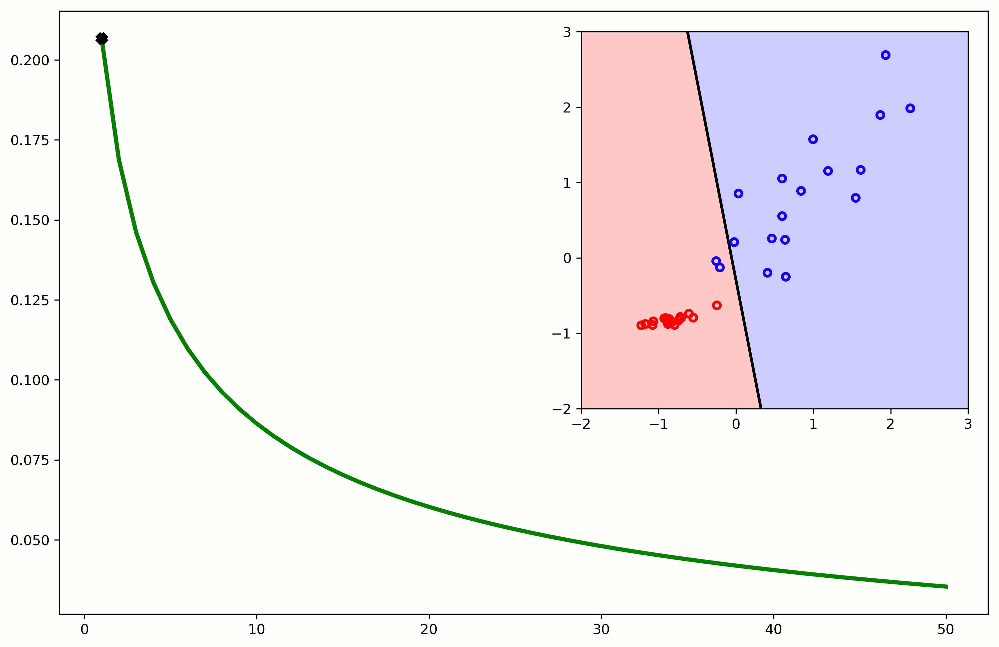

Aprendizagem Profunda
4 - Intro to Tensorflow
Ludwig Krippahl
Tensorflow
Summary
- Basic types in tensorflow
- Implementation examples:
- Logistic regression
- The OR problem, one neuron
- The XOR problem and building a small MLP (Exercise)
Intro to Tensorflow
Basics
Tensorflow basics
The flow of tensors
- Tensorflow computations are defined by a computation graph
- Each node is an operation
- Each arc is a tensor (a N-ranked matrix) carrying the data flowing in the graph
- With eager execution each operation is executed in order (on the CPU or GPU)
- Alternatively, we can create a computation graph that Tensorflow will optimize for execution
- We will see this next week
Tensorflow basics
The flow of tensors
- Tensorflow computations are defined by combining tensorflow operations and tensors
- Example:
total = a + b
import tensorflow as tf
a = tf.constant(3.0, dtype=tf.float32, name='a')
b = tf.constant(4.0, name='b')
total = tf.add(a,b, name='total')Tensorflow basics
The flow of tensors
- Tensorflow computations are defined by combining tensorflow operations and tensors
- Example:
total = a + b
import tensorflow as tf
a = tf.constant(3.0, dtype=tf.float32, name='a')
b = tf.constant(4.0, name='b')
total = tf.add(a,b, name='total')- With Tensorflow 2+ the default mode is eager execution.
- This means we get the result immediately on running the Python code
In : total
Out: <tf.Tensor: id=2, shape=(), dtype=float32, numpy=7.0>Tensorflow basics
The flow of tensors
- Tensorflow computations are defined by combining tensorflow operations and tensors
- Example:
total = a + b; result = total * c
import tensorflow as tf
a = tf.constant(3.0, dtype=tf.float32, name='a')
b = tf.constant(4.0, name='b')
total = tf.add(a,b, name='total')
c = tf.constant(3.0, dtype=tf.float32, name='c')
result = tf.multiply(c,total,name='result')In : result
Out: <tf.Tensor: [...], numpy=21.0>Tensorflow basics
The flow of tensors
- Tensorflow overloads the usual Python operators
- And the
.numpy()method returns a numpy array with the tensor values - Example:
total = a + b; result = total * c
a = tf.constant(3.0, dtype=tf.float32, name='a')
b = tf.constant(4.0, name='b')
total = tf.add(a,b, name='total')
c = tf.constant(3.0, dtype=tf.float32, name='c')
result = tf.multiply(c,total,name='result')In : result
Out: <tf.Tensor: [...], numpy=21.0>
In : result.numpy()
Out: 21.0Intro to Tensorflow
Logistic regression
Logistic Regression
Logistic regression with tensorflow

Logistic Regression
Logistic regression with tensorflow
- Find
w˜ by minimizing logistic loss:
Logistic Regression
Logistic Regression
Logistic model graph:
Logistic Regression
Logistic loss, to minimize:
Logistic Regression
Logistic loss, to minimize:
- Auxiliary graphs, for gradient descent optimization
Logistic Regression
Implementing in Tensorflow
- Load data and standardize
import tensorflow as tf
import numpy as np
import matplotlib.pyplot as plt
mat = np.loadtxt('gene_data.txt',delimiter='\t')
Ys = mat[:,-1]
Xs = mat[:,:-1]
means = np.mean(Xs,0)
stdevs = np.std(Xs,0)
Xs = (Xs-means)/stdevs-81 10 1 -30 60 1 -1 48 1 4 78 1 -34 19 1
Logistic Regression
Implementing in Tensorflow
- Create logistic regression model
- (parameters and prediction function)
weights = tf.Variable(tf.random.normal((2,1)), name="weights")
bias = tf.Variable(0.0, name="bias")
def prediction(X):
t_X = tf.constant(X.astype(np.float32))
net = tf.add(tf.matmul(t_X, weights), bias, name="net")
return tf.reshape(tf.nn.sigmoid(net, name="output"),[-1])Logistic Regression
Implementing in Tensorflow
- Create loss function, to minimize:
def logistic_loss(predicted,y):
t_y = tf.constant(y.astype(np.float32))
cost = -tf.reduce_mean(t_y * tf.math.log(predicted) \
+ (1-t_y) * (tf.math.log(1-predicted)))
return cost- Note:
ymay be anumpyarray, butpredictedis expected to be a tensor
Logistic Regression
Implementing in Tensorflow
- Now we need Automatic Differentiation
- We trace the gradients with
GradientTape() - We return the gradients computed with respect to the variables
weightsandbias - We also return the variables we traced.
- This is not necessary but I find it convenient to have both things in the same place and in the same order
def grad(X, y):
with tf.GradientTape() as tape:
predicted = prediction(X)
loss_val = logistic_loss(predicted,y)
return tape.gradient(loss_val, [weights, bias]),[weights,bias]Logistic Regression
Implementing in Tensorflow
- And now we can do the training loop, with shuffling
optimizer = tf.optimizers.SGD(learning_rate=0.1)
batch_size = 1
batches_per_epoch = Xs.shape[0]//batch_size
epochs=20
def run():
for epoch in range(epochs):
shuffled = np.arange(len(Ys))
np.random.shuffle(shuffled)
for batch_num in range(batches_per_epoch):
start = batch_num*batch_size
batch_xs = Xs[shuffled[start:start+batch_size],:]
batch_ys = Ys[shuffled[start:start+batch_size]]
gradients,variables = grad(batch_xs, batch_ys)
optimizer.apply_gradients(zip(gradients, variables))
y_pred =prediction(Xs)
loss = logistic_loss(y_pred,Ys)
print(f"Epoch {epoch}, loss {loss}")Logistic Regression
Implementing in Tensorflow

Intro to Tensorflow
Solving the OR problem
One Neuron, OR
Implementing in Tensorflow
- Create "data" tensors and parameters
import tensorflow as tf
import numpy as np
Xs = np.array([(0,0),(0,1),(1,0),(1,1)])
Ys = np.array([0,1,1,1])
weights = tf.Variable(tf.random.normal((2,1)), name="weights")
bias = tf.Variable(0.0, name="bias")
def prediction(X):
t_X = tf.constant(X.astype(np.float32))
net = tf.add(tf.matmul(t_X, weights), bias, name="net")
return tf.reshape(tf.nn.sigmoid(net, name="output"),[-1])
def mse_loss(predicted,y):
t_y = tf.constant(y.astype(np.float32))
cost = tf.reduce_mean(tf.math.square(t_y-predicted))
return costOne Neuron, OR
Implementing in Tensorflow
- The rest is the same, except we need more epochs
- (only 4 examples)
def grad(X, y):
with tf.GradientTape() as tape:
predicted = prediction(X)
loss_val = mse_loss(predicted,y)
return tape.gradient(loss_val, [weights, bias]),[weights,bias]
optimizer = tf.optimizers.SGD(learning_rate=0.1)
batch_size = 1
batches_per_epoch = Xs.shape[0]//batch_size
epochs=200One Neuron, OR
Implementing in Tensorflow
- The rest is the same, except we need more epochs
- (only 4 examples)
def run(plot=False):
for epoch in range(epochs):
shuffled = np.arange(len(Ys))
np.random.shuffle(shuffled)
for batch_num in range(batches_per_epoch):
start = batch_num*batch_size
batch_xs = Xs[shuffled[start:start+batch_size],:]
batch_ys = Ys[shuffled[start:start+batch_size]]
gradients,variables = grad(batch_xs, batch_ys)
optimizer.apply_gradients(zip(gradients, variables))
y_pred =prediction(Xs)
loss = mse_loss(y_pred,Ys)
print(f"Epoch {epoch}, loss {loss}")One Neuron, OR
Implementing in Tensorflow
One Neuron, XOR
Implementing in Tensorflow
- Everything as before, except we change the labels
...
Xs = np.array([(0,0),(0,1),(1,0),(1,1)])
Ys = np.array([0,1,1,0])
...- This will not work with one neuron
One Neuron, XOR
Implementing in Tensorflow
- Run computation graph; one neuron cannot separate XOR
One Neuron
One neuron is a linear classifier
- But we can use it for the gene data (similar to logistic regression)
mat = np.loadtxt('gene_data.txt',delimiter='\t')
Ys = mat[:,[-1]]
Xs = mat[:,:-1]
means = np.mean(Xs,0)
stdevs = np.std(Xs,0)
Xs = (Xs-means)/stdevsOne Neuron
One neuron is a linear classifier
- Not good if classes are not not linearly separable
mat = np.loadtxt('reordered_90.txt',delimiter='\t')
Ys = mat[:,[-1]]
Xs = mat[:,:-1]
means = np.mean(Xs,0)
stdevs = np.std(Xs,0)
Xs = (Xs-means)/stdevs
Intro to Tensorflow
Multilayer Perceptron
MLP, XOR
With one hidden layer we can solve the XOR problem

- The hidden layer transforms the data into linearly separable
MLP, XOR
With one hidden layer we can solve the XOR problem
- Generate the "data"
Xs = np.array([(0,0),(0,1),(1,0),(1,1)])
Ys = np.array([0,1,1,0])- Now create one hidden layer with two neurons
- One output layer with one neuron:
MLP, XOR
With one hidden layer we can solve the XOR problem
Intro to Tensorflow
Summary
Intro to Tensorflow
Summary
- Tensorflow constants and variables
- Activations
- Loss
- Gradients
- Automatic Differentiation
Exercises
- Today: follow this lecture, try to solve the XOR problem
- Expand to the MLP in the previous lecture using the other data files
- Experiment with momentum and learning rates
Aprendizagem Profunda
4 - Intro to Tensorflow
Ludwig Krippahl